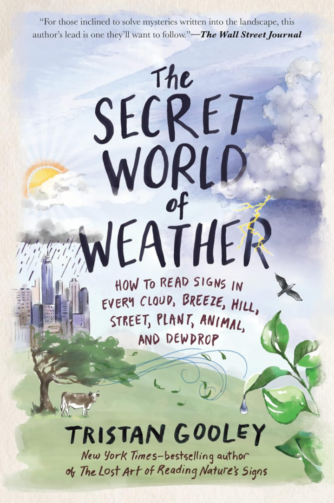
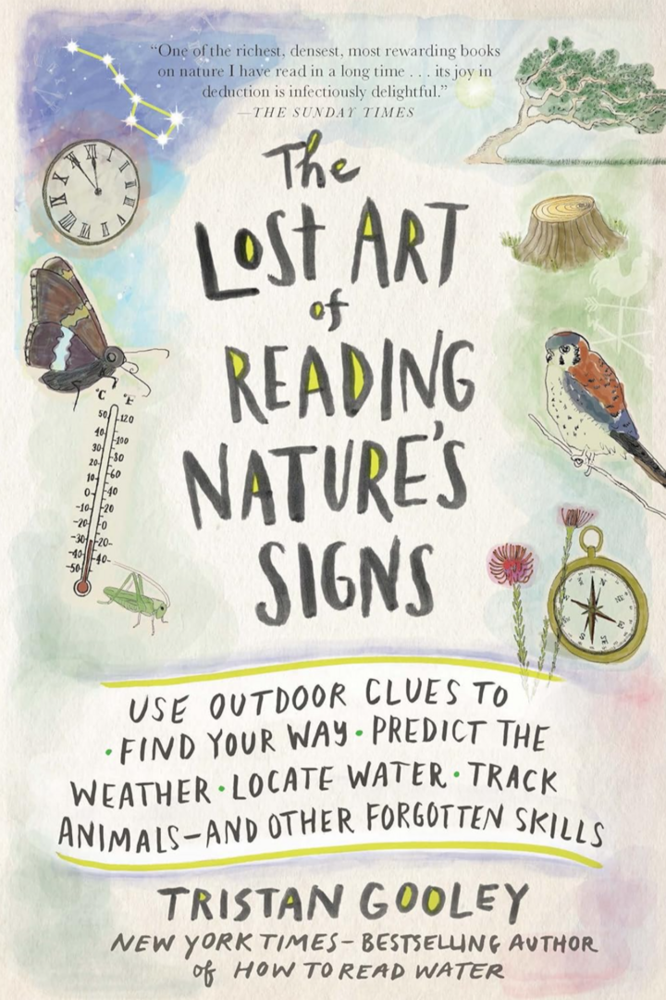
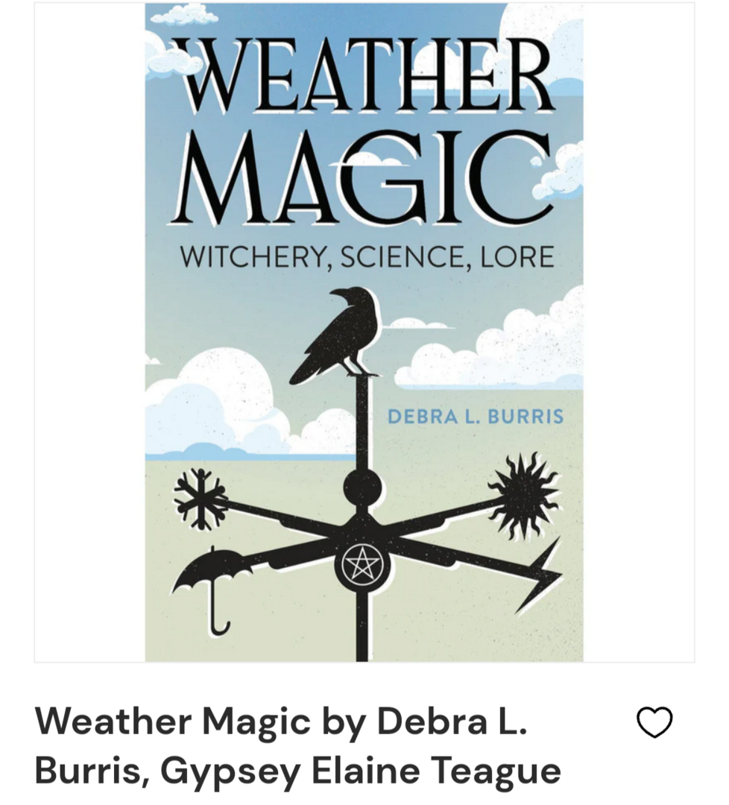
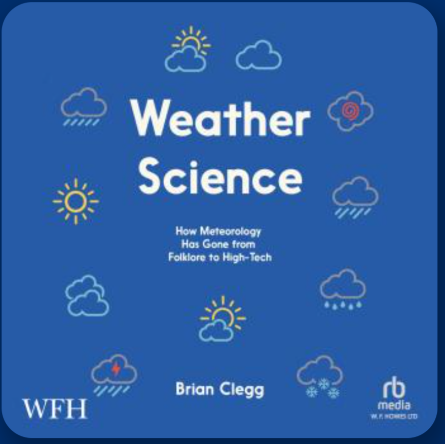
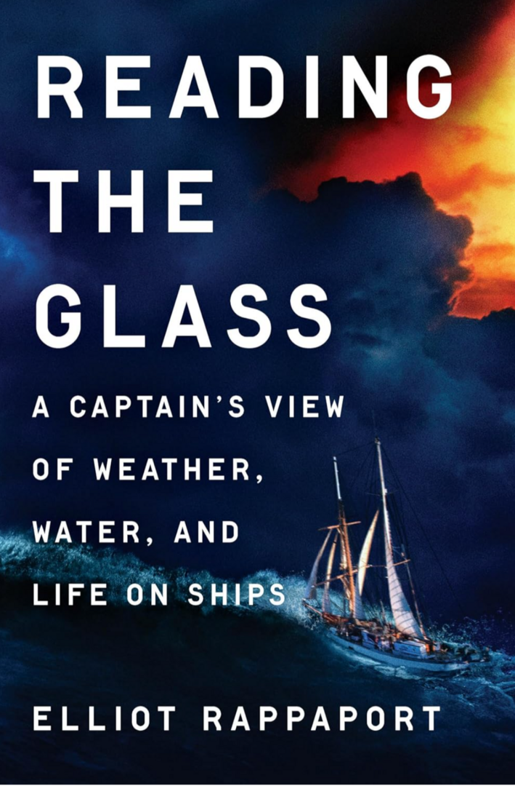
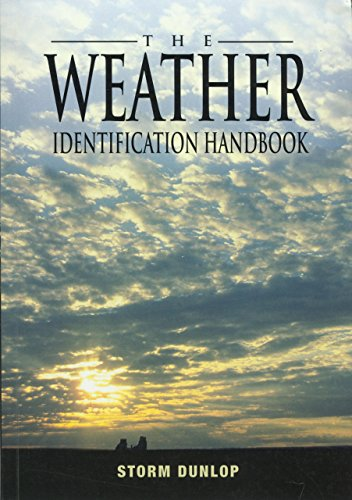

Books
I am a huge fan of libraries; I suggest you check yours out and see what they have to offer. Not just in the context of books; some
also offer discounted memberships for educational resources. For example, I get unlimited free classes from Universal Class through my
library (which does indeed offer a meteorology course). No time to read? Most have audiobooks too. See if your library is linked with
apps like Libby and Hoopla, so you can check out
books to download to your Kindle or other readers.

I have this book; I haven't finished it yet, but it's an interesting read.

I have this book too; it's more about nature in general, but it does have a chapter specifically about weather.


Note: this is an audio book.


Home